ANTON.IA
Manual de usuario
Cómo usar cada pantalla, paso a paso, con las preguntas más frecuentes. Es el mismo contenido del Centro de ayuda de la app: el botón «?» de cada pantalla y «Centro de ayuda» al final del menú.
Actualizado el 19 de octubre de 2026. Si algo de la pantalla no calza con el manual, la pantalla manda.
Tu camino al primer correo
- Cuenta qué vendes: Tu oferta y tu cliente ideal guían la búsqueda y los correos.
- Conecta tu correo: Gmail u Outlook: los correos salen desde tu cuenta.
- Encuentra prospectos: Empresas afines y quién decide dentro de ellas.
- Consigue su correo: Al guardar: un crédito por persona, con o sin móvil.
- Investiga y escribe: La IA prepara el borrador; tú lo revisas y lo envías.
- Responde y cierra: Contesta en el mismo hilo y cierra cada conversación.
Empieza aquí
Primeros pasos
ANTON.IA te ayuda a encontrar prospectos, investigarlos y escribirles con correos que la IA prepara y tú apruebas. Este es el camino hasta tu primer correo.
Paso a paso
- Completa «Perfil»: qué vendes, a quién y por qué elegirte. «Complétalo con IA» lo propone leyendo el sitio de tu empresa.
- Conecta tu correo en «Conexiones» (Gmail u Outlook). Los correos salen desde tu cuenta y las respuestas vuelven a la app.
- Busca prospectos en «Buscar prospectos» y guarda a quienes te interesen.
- Al guardar, elige si buscar su correo o su correo y móvil, para todos o uno por uno. Quien tiene datos pasa directo a «Por escribir».
- En «Por escribir», investiga a cada contacto y pulsa «Contactar»: la IA prepara el correo inicial y sus seguimientos.
- Revisa el correo, pulsa «Confirmar revisión» y después «Enviar ahora». Nada sale sin que tú lo envíes o lo apruebes.
- Sigue las respuestas en «Conversaciones» y en «Hoy».
Consejos
- «Hoy» muestra en «Prepara tu cuenta» qué te falta (perfil, correo conectado, primeros contactos y primer envío).
- El botón «?» de la barra superior explica la pantalla en la que estás, con su video, y el botón ▶ «Ver tutorial», junto a «Centro de ayuda» al final del menú, repite el recorrido.
Preguntas frecuentes
- ¿Por dónde empiezo?
- Por «Perfil» y «Conexiones». Sin tu oferta la IA no puede redactar, y sin correo conectado no puedes enviar. «Hoy» te dice cuál de los dos te falta.
- ¿La IA envía correos sola?
- No. La IA prepara borradores. Un correo individual sale cuando pulsas «Enviar ahora», y una campaña cuando la apruebas.
- ¿Cómo vuelvo a ver el tutorial?
- Con el botón ▶ «Ver tutorial», junto a «Centro de ayuda» al final del menú. Lo puedes cerrar en cualquier paso con «Omitir». Cada módulo tiene además su video en el Centro de ayuda.
Hoy
Tu inicio: lo que toca ahora, tus llamadas y LinkedIn, a quién retomar y tu resumen del día.
En el menú: Hoy /dashboard
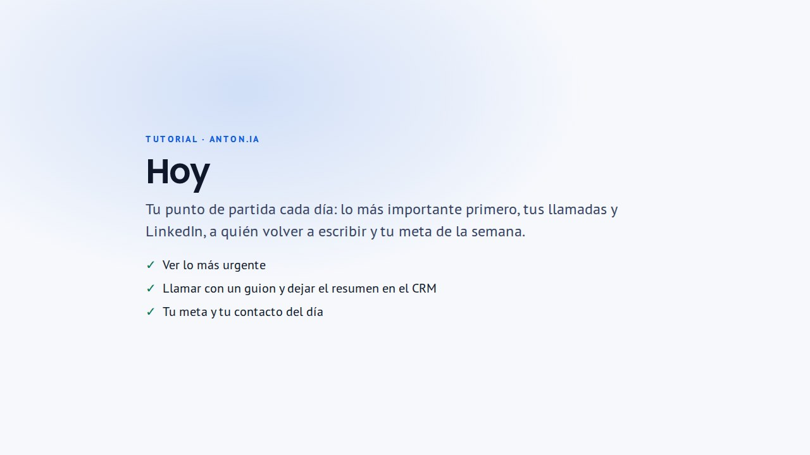
Paso a paso
- «Lo primero hoy» muestra una sola acción, en este orden: responder a quien te respondió, resolver lo que impide enviar, un compromiso que vence hoy, escribir a tus contactos con correo, completar correos o buscar prospectos.
- «Lo que te espera» lista hasta 6 pendientes, los urgentes primero. Cada uno abre la conversación exacta.
- «Prepara tu cuenta» tiene cuatro pasos comprobados: perfil con empresa y oferta, correo conectado, primeros contactos y primer envío. Cada paso pendiente trae su enlace.
- «Para retomar» aparece cuando alguien vale la pena de nuevo: una conversación que cerraste «Sin acuerdo» o dejaste en «Lo retomo yo» hace 60 días, alguien que no respondió en 45 días, o una empresa con la que hablaste que ahora está contratando o publicó una licitación. «Retomar» prepara un correo nuevo con otro ángulo para que lo revises en «Redactar»; con «…» lo pospones 30 días o lo descartas.
- «Llamadas y LinkedIn» te recuerda llamar o invitar por LinkedIn a quien no respondió tu primer correo, el día que elijas: por defecto, LinkedIn el día 1 y la llamada el día 3. Se enciende con «Activar» y se cambia con «Ajustar». Si la persona responde, lo pendiente se cancela solo.
- En cada fila, el botón llama al número o abre su LinkedIn. «Guion y resultado» prepara qué decir, el mensaje si no contesta o la nota de la invitación; marca qué pasó y pulsa «Guardar». Si hablaron, «Subir grabación» deja el resumen, los acuerdos y el próximo paso en el CRM.
- Al lado, «Tu resumen de hoy» cuenta tus correos enviados, contactos, respuestas y guardados del día, con su gráfico, y «Tu cupo de hoy» dice cuánto te queda. Cómo fue la semana está en «Informe semanal».
Preguntas frecuentes
- ¿Por qué «Prepara tu cuenta» dice que mi correo no está conectado?
- Mira si hay una conexión guardada de Gmail u Outlook. La sesión de Outlook abierta solo en el navegador no cuenta. Conéctalo en «Conexiones».
- ¿Qué es un compromiso?
- Una fecha o próximo paso acordado con un contacto, como una reunión. Cuando vence hoy o ya venció, aparece en «Lo que te espera».
- ¿Por qué no me toca llamar a alguien?
- Solo se llama a quien tiene teléfono: pídelo al guardar el contacto, con «Correo + teléfono». Además, «Llamadas y LinkedIn» cuenta a quienes escribiste desde que lo activaste, hasta 45 días atrás, y cancela lo pendiente si la persona respondió, rebotó o pidió no recibir más correos.
- ¿Se graba la llamada?
- Solo si tú la grabas, con la grabadora del teléfono o del computador, y pidiendo permiso al empezar. Al subir el audio lo transcribimos y resumimos para el CRM; el audio no se guarda.
- ¿Por qué hay un límite de LinkedIn al día?
- LinkedIn restringe las cuentas que envían muchas invitaciones. Mostramos hasta 20 al día; las demás quedan para mañana. Una tarea que no haces se cierra sola una semana después de su día.
- ¿Por qué no aparece alguien en «Para retomar»?
- Nunca aparece quien cerraste como «No interesado» o «Ganado», quien pidió no recibir más correos, quien respondió que no o cuyo correo rebotó. Tampoco quien te respondió y espera tu respuesta: esa persona está en «Lo que te espera». Puedes cambiar los días de espera abajo en la tarjeta.
Para todas las cuentas
Cowork
Tu asistente de ventas: le pides lo que necesitas con tus palabras y lo hace con tus contactos, tu oferta y tus correos. Lo que envía, guarda o gasta créditos espera tu aprobación.
En el menú: Cowork /cowork
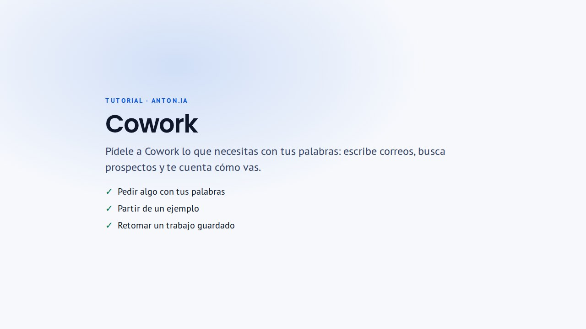
Paso a paso
- Escribe lo que necesitas, por ejemplo «¿Qué toca hoy?» o «Escribe a mis contactos de retail», o parte con una de las sugerencias de la portada. Con «/» ves los atajos y con «@» nombras a un contacto guardado.
- Cowork busca, lee y prepara a la vista: te muestra lo que va haciendo y deja el resultado en la conversación, como una tabla de contactos, un correo, un gráfico o un informe.
- Cuando propone algo que envía, guarda o gasta créditos, aparece una tarjeta con «Aprobar». Nada sale ni se guarda sin ese clic, y puedes editar antes de aprobar.
- Tus conversaciones quedan en la lista de la izquierda. Puedes adjuntar archivos, como un Excel con contactos, y bajar tablas en Excel o CSV e informes en Word o PDF.
- Si no sabes por dónde partir, pregunta «¿Qué puedes hacer?»: te muestra todo lo que hace, con ejemplos para probar.
Consejos
- Dile qué vendes en «Perfil» antes de empezar: Cowork escribe y busca a partir de tu oferta.
- Una campaña que arma Cowork queda guardada sin enviar hasta que la actives.
Preguntas frecuentes
- ¿Cowork envía correos sin preguntarme?
- No. Cada envío, campaña, invitación de LinkedIn o búsqueda de correo aparece como una tarjeta que apruebas tú.
- ¿Cuánto puedo usarlo?
- Hay un uso diario del asistente por persona. Si llegas al límite, Cowork te lo dice: se renueva a medianoche, hora de Chile, y lo hecho queda guardado.
- ¿Quién ve mis conversaciones?
- Solo tú. Cowork trabaja con los contactos y datos que puedes ver en el workspace activo.
Informe semanal
Tu semana en un vistazo: cuánto escribiste, quién respondió, qué te espera y qué hacer en los próximos días. Puede llegarte por correo cada lunes.
En el menú: Informe semanal /weekly-report
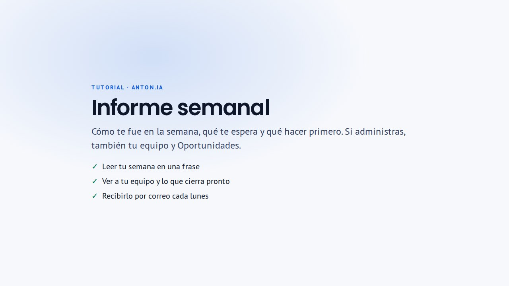
Paso a paso
- Arriba eliges «Esta semana» (de lunes a hoy) o «Semana pasada» (de lunes a domingo). Cada cifra se compara con los mismos días de la semana anterior.
- «Tu semana» trae una frase con lo importante, tus correos enviados, las personas contactadas, las respuestas, las reuniones pedidas y «Para esta semana»: hasta tres cosas para hacer, con su enlace.
- Si administras la organización, «Equipo» muestra lo mismo por persona, con quién tiene respuestas por atender.
- «Oportunidades» muestra lo que llegó en la semana, lo que cierra en los próximos 7 días y lo que nadie tiene asignado. Lo ven los gestores de oportunidades que elija un administrador; mientras no haya, los administradores.
- Abajo, «Recibirlo por correo cada lunes» te lo envía a las 8:00 con la semana anterior, desde tu Gmail u Outlook conectado y a tu propio correo. «Enviármelo ahora» te manda el que estás viendo.
Preguntas frecuentes
- ¿Desde dónde sale el correo del informe?
- Desde tu propia cuenta de Gmail u Outlook conectada en «Conexiones», hacia tu mismo correo. No lo recibe nadie más y no usa tu cupo de envíos.
- ¿Cómo nombro a un gestor de oportunidades?
- Si administras la organización, en «Informe semanal» pulsa «Gestores de oportunidades», marca a las personas y guarda. Desde el lunes siguiente reciben la sección «Oportunidades».
- ¿Por qué mis cifras no coinciden con «Hoy»?
- «Hoy» cuenta solo el día. El informe cuenta la semana de lunes a domingo, en hora de Chile, y solo correos confirmados por tu proveedor.
Prospectar
Buscar prospectos
Encuentra a las personas a quienes venderles y guárdalas para escribirles.
En el menú: Buscar prospectos /search
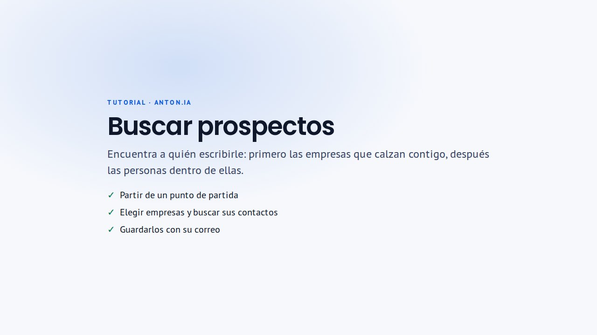
Paso a paso
- Elige cómo buscar: «Filtros» (cargo, nivel, sector, tamaño y sede de la empresa), «Empresa» (las personas de una empresa en particular) o «Perfil» (pega la dirección de un perfil de LinkedIn).
- Si no sabes qué filtros usar, elige un punto de partida: rellena cargos e industrias según lo que vendes y «Tu cliente ideal» de «Perfil». Todo queda editable.
- Con «Filtros» primero ves empresas: selecciona las que te interesan y busca contactos en ellas.
- Marca a las personas que te interesan y pulsa «Guardar seleccionados». El aviso dice dónde quedó cada una y trae el botón para seguir.
- Guarda los criterios con «Guardar» para repetir la búsqueda otro día.
Consejos
- Con cero resultados, la pantalla lista los filtros activos con un botón «Quitar» en cada uno.
- El correo laboral se pide al guardar o al buscar el correo. El teléfono es opcional: cuesta 10 créditos por persona y llega en 1 a 3 minutos, si el proveedor lo tiene.
- Los contactos ya contactados aparecen marcados como «Contactado».
Preguntas frecuentes
- La búsqueda por perfil de LinkedIn no encontró a la persona. ¿Qué hago?
- Pulsa «Buscar en «Empresa»» y escribe su empresa y su cargo: el nombre se toma de la dirección del perfil. El proveedor de datos no tiene a todas las personas de LinkedIn.
- Dice que encontró a otra persona. ¿Por qué?
- Suele pasar cuando la persona cambió la dirección de su perfil. ANTON.IA nunca muestra datos de otra persona; busca por empresa y cargo.
- ¿Sirve una dirección de Sales Navigator o de una empresa?
- No. Copia la dirección del perfil público, la que empieza con linkedin.com/in/. Para una empresa usa el modo «Empresa».
- El proveedor no respondió. ¿Perdí créditos?
- Es un problema temporal que no depende de la dirección. Pulsa «Reintentar» en unos minutos.
- ¿Cuántas búsquedas puedo hacer?
- Hay un uso diario por persona que se reinicia a medianoche (UTC). Lo ves en «Hoy», en «Créditos y uso diario».
Para las cuentas con Oportunidades
Oportunidades
Licitaciones, Compra Ágil, empresas que están contratando y publicaciones de LinkedIn que calzan con tu oferta, con un informe de la IA para decidir, postular y ganar.
En el menú: Oportunidades /opportunities
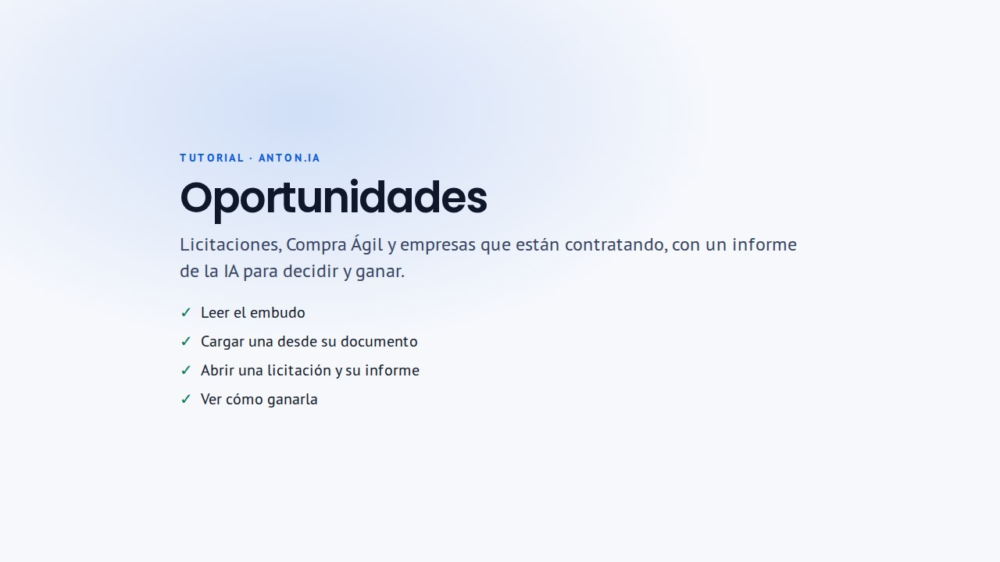
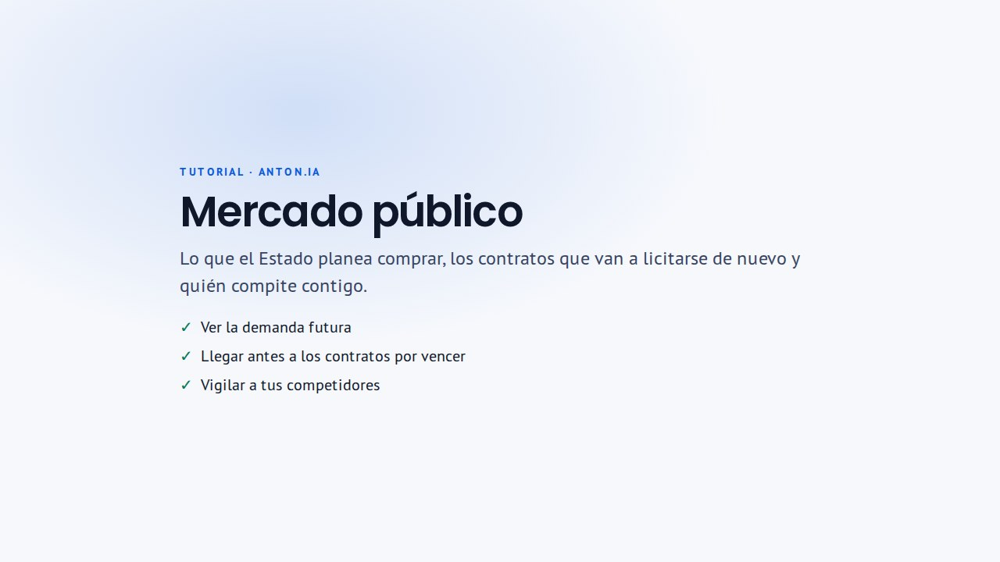
Paso a paso
- La primera vez, quien administra pulsa «Confirmar oferta» y revisa qué vende la empresa: la IA prepara los criterios desde esa oferta, sin escribir palabras de búsqueda. Desde ahí buscamos cada mañana. En la misma ventana («Empresa del workspace») conectas tu ticket de Mercado Público.
- «Embudo» muestra cuántas hay en cada etapa: Por revisar, Recomendadas, Asignadas, En preparación, Presentadas y Ganadas. Avanzan solas cuando el trabajo lo muestra (un equipo asignado, el informe listo, la oferta presentada), y «Revisar con IA» propone otros cambios que tú aceptas.
- «Lista» trae primero las recomendadas, cada una con el motivo del calce, el cierre y el monto, y filtros para ver las demás. «Por dónde empezar» ordena las de mejor calce que cierran pronto. «Cargar oportunidad» suma una que recibiste por otro lado, con sus bases.
- «Abrir y trabajar» abre el expediente. «Asignar equipo» elige quién la trabaja, e «Informe» dice si conviene postular, por qué y qué hacer ahora, con las fechas, los requisitos y los riesgos. Sube las bases en «Documentos»: la IA las lee y completa el informe. «Preguntar a la IA» responde con esas bases y cita de dónde lo sacó.
- Si te asignan oportunidades, ves «Mis oportunidades»: lo nuevo, lo que gestionas y lo bloqueado, con la próxima acción de cada una.
- Con el informe listo, en «Cómo postular» pulsa «Preparar borrador de oferta»: la IA arma la carta, la oferta técnica por criterio de evaluación, el cumplimiento de requisitos y las líneas a cotizar. Completa los datos marcados entre corchetes, escribe los precios y descárgalo en Word.
- En una licitación o Compra Ágil, «Cómo ganar» muestra lo que ese organismo compró antes que se parece, quién ganó, con cuántos oferentes y a qué precio frente al estimado, y lo que pagaron otros organismos. «Preparar estrategia» le pide a la IA un rango de precio apoyado en esos montos, qué destacar, los riesgos y a quién tendrás enfrente.
- Si administras Oportunidades, «Mercado público» reúne tres vistas con datos de ChileCompra. «Demanda futura»: lo que los organismos planean comprar este año según su Plan Anual de Compras. «Contratos por vencer»: contratos que hoy tiene otra empresa, calzan con tu oferta y terminan pronto, con quién los tiene y por cuánto. «Competidores»: busca un proveedor por nombre o RUT, síguelo y ve lo que gana. En las dos primeras, «Seguir» lo agrega a tus oportunidades para llegar antes de que liciten.
- Si administras Oportunidades, completa la «Ficha para licitaciones» (junto a «Qué buscamos»): razón social, RUT, regiones, experiencia, certificaciones y garantías. «Completar con IA» la llena desde tu Perfil y tu sitio web. Con ella la IA no descarta una licitación por algo que sí tienes, y el borrador de oferta trae tus datos.
- En el informe de una licitación, cada requisito dice si cumples (✓), si falta un dato (⚠) o si no cumples (✗) según tu ficha. Responde las preguntas de «Falta un dato» con «Sí», «No» o en tus palabras: queda guardado en la ficha y la IA revisa de nuevo.
- En la ficha, «Documentos de la empresa» guarda el F30, la vigencia de la sociedad, los estados financieros y tus certificados con su vencimiento. Te avisamos 15 días antes de que venzan y la IA sabe cuáles tienes vigentes.
- En «Asistente» conversa con la IA sobre todas tus oportunidades: qué calza esta semana, qué cierra pronto o qué piden las bases. Responde con las oportunidades que puedes ver, te deja abrirlas y, si la pregunta es sobre una licitación, te ofrece seguir en su propia conversación, que lee sus bases. Tus conversaciones quedan en la lista de la izquierda.
Preguntas frecuentes
- ¿Para qué sirve saber que una empresa está contratando?
- Es una razón concreta para escribirle: si busca personal, puede necesitar lo que ofreces.
- ¿Cómo consigo mi ticket de Mercado Público?
- En chilecompra.cl/api pulsa «Pide tu ticket», ingresa con tu Clave Única y completa el formulario eligiendo «Solicitud de Ticket». El ticket llega a tu correo: pégalo en Oportunidades → «Empresa del workspace» (o en Conexiones) y pulsa «Probar y guardar». Es gratis.
- ¿Cómo elige la IA las licitaciones?
- Lee todas las compras abiertas contra la oferta confirmada en «Empresa del workspace» y recomienda aquellas a las que podrías postular, con una frase que dice por qué. Las demás quedan en «No recomendadas» con su motivo. Para cambiar lo que busca, actualiza esa oferta.
- ¿La IA inventa datos en el borrador de oferta?
- No debería: usa solo lo que dicen las bases y tu Perfil, y lo que falta lo deja entre corchetes, como [RUT] o [años de experiencia], para que lo completes. Revisa cada dato con las bases antes de enviar; los precios los escribes tú.
- ¿Qué pasa si dejo preguntas de la ficha en blanco?
- La IA lo toma como «no sé», nunca como un no: no descarta una licitación por eso y, si importa, te dice qué dato falta. Puedes completarla cuando quieras; al guardar te ofrece revisar de nuevo las licitaciones descartadas por un requisito o por su tamaño.
- ¿El Asistente ve todas las oportunidades del equipo?
- Ve las mismas que tú en Oportunidades: si administras, todas; si no, las que te asignaron. Tus conversaciones son privadas. Para preguntas sobre los documentos de una licitación, usa su conversación: el Asistente te lleva a ella con un botón.
- ¿De dónde sale el historial de «Cómo ganar» y del radar de competidores?
- De los datos abiertos de ChileCompra: cada licitación con sus ofertas y quién ganó. Guardamos todas las ofertas del último año, las ganadoras de los dos años anteriores y los contratos largos de hasta cuatro años, y los actualizamos cada mes. Son datos públicos; la estrategia es una sugerencia y el precio lo decides tú.
- ¿Por qué algunos competidores no muestran su RUT?
- Cuando quien oferta es una persona natural, mostramos solo su nombre: su RUT es un dato personal, aunque ChileCompra lo publique. De las empresas sí ves el RUT.
- ¿Qué hago si Mercado público dice que el historial tardó?
- Es temporal: el historial de ChileCompra no respondió a tiempo. En «Competidores» pulsa «Reintentar» en unos minutos; los competidores que sigues se ven igual. Si la revisión de «Contratos por vencer» no terminó, se vuelve a intentar sola en unas horas, o pulsa «Actualizar».
- ¿Qué tan exacta es la fecha de «Contratos por vencer»?
- Es estimada: la fecha de adjudicación más la duración del contrato que informó el organismo. Una prórroga, un trato directo o un contrato que empezó después pueden moverla. Úsala para preparar la conversación con tiempo, no como fecha de cierre.
- ¿Qué tan seguro es lo que aparece en «Demanda futura»?
- Es lo que cada organismo publicó en su Plan Anual de Compras, con el monto y el mes estimados. Es referencial: puede comprar menos, en otra fecha o por otro mecanismo. Sirve para presentarte antes de que publiquen la licitación.
- ¿Por qué necesito mi propio ticket?
- ChileCompra entrega un ticket por persona y cada uno tiene su límite diario de consultas. Con el tuyo, tus búsquedas no dependen de otra cuenta. Lo guardamos cifrado y solo mostramos sus últimos 4 caracteres.
Contactos
Buscar el correo
Al guardar contactos sin correo, eliges qué buscarles: solo el correo laboral, o el correo y el móvil. Quien tiene datos pasa directo a «Por escribir».
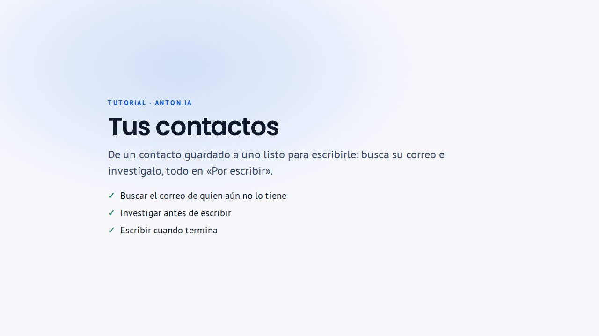
Paso a paso
- En «Buscar prospectos», marca a quienes te interesan y pulsa «Guardar».
- Si alguno no tiene correo, se abre «Completa sus datos»: en «Para todos» eliges «Solo correo» o «Correo + teléfono», o lo cambias persona por persona.
- Pulsa «Buscar datos»: el botón dice cuántos créditos usa. Quien recibe correo o teléfono pasa a «Por escribir».
- Si prefieres esperar, «Guardar sin buscar» los deja al final de «Por escribir», con «Buscar sus datos» para cuando quieras.
Consejos
- Buscar datos usa tu cupo diario de enriquecimiento: un crédito por contacto, pidas o no el teléfono.
- El teléfono puede tardar unos minutos: aparece solo en su fila.
Preguntas frecuentes
- ¿Dónde quedan los contactos guardados?
- En «Por escribir». Los que aún no tienen correo aparecen arriba, en el aviso «aún no tienen correo», con «Buscar sus datos».
- ¿Qué pasa si no se encuentra el correo?
- El contacto queda guardado y marcado «Correo no encontrado», con la fecha. Puedes pulsar «Buscar sus datos» otro día o escribirle por LinkedIn.
- ¿Cuánto cuesta pedir también el teléfono?
- Lo mismo: un crédito por contacto, con o sin teléfono.
Por escribir
Contactos con correo. Investígalos y escríbeles: la IA prepara el borrador y tú lo revisas.
En el menú: Por escribir /saved/leads/enriched
Paso a paso
- Arriba ves cuántos contactos están en cada etapa: «Por investigar», «Investigando», «Revisar informe» y «Listos para escribir». Cada una filtra la lista.
- Marca a quienes quieras (hasta 50 por vez). La barra de abajo dice qué hará: «Investigar», «Escribir» o ambas. La IA reúne evidencia de su empresa y su rol para que el correo no sea genérico.
- Con la investigación lista, «Ver investigación» muestra el informe y sus fuentes, y «Escribir» abre el contacto listo para preparar su secuencia.
- La IA prepara un correo inicial y sus seguimientos como borradores. Preparar no envía nada.
- Pulsa «Revisar y editar correos» para revisarlos y enviarlos.
Consejos
- «Información limitada» indica que se encontró poca evidencia: el correo será más general.
- Filtra por teléfono (disponible, en proceso o sin teléfono) y por empresa, nombre o cargo, incluyendo o excluyendo términos.
Preguntas frecuentes
- ¿Tengo que investigar antes de escribir?
- Es lo recomendado: con evidencia de la empresa y del rol, el correo es más concreto.
- ¿Cuánto tarda una investigación?
- Unos minutos. Puedes seguir usando la app; el estado se actualiza en la lista.
- La IA no puede redactar y dice que falta mi oferta. ¿Qué hago?
- Completa «Lo que vendes» en «Perfil» (servicios o propuesta de valor). La IA solo afirma lo que está en tu perfil.
- ¿Puedo borrar una investigación?
- Sí: desde el informe («Eliminar investigación») o con «Más» en la barra de la selección.
Preparar y enviar un correo
Dónde revisas la secuencia que preparó la IA, la ajustas y envías el correo inicial desde tu cuenta.
Paso a paso
- «Tu secuencia de contacto» muestra el avance: tema, correo inicial, seguimientos y revisión. Puedes cerrar la página y volver: el progreso queda guardado.
- Con la secuencia lista, pulsa «Revisar y editar correos».
- Revisa la línea «De:»: dice desde qué correo saldrá. Si no hay correo conectado, aparece «Conectar Gmail» y el envío queda deshabilitado.
- Edita el texto o pide un ajuste a la IA («Qué quieres cambiar») sin perder la investigación.
- Pulsa «Guardar cambios», luego «Confirmar revisión» (no envía todavía) y por último «Enviar ahora».
Consejos
- «Pedir otra versión a la IA» prepara una secuencia nueva con tus indicaciones y conserva la actual.
- Los seguimientos se detienen si la persona responde.
Preguntas frecuentes
- ¿Desde qué correo sale?
- Desde tu cuenta conectada de Gmail u Outlook. La línea «De:» lo muestra antes de enviar.
- ¿«Confirmar revisión» envía el correo?
- No. Confirma que lo revisaste. El correo sale con «Enviar ahora».
- Dice «La solicitud no obtuvo confirmación». ¿Se envió dos veces?
- No. Puedes reintentar con seguridad: se usa la misma operación, así que no se duplica.
- ¿Puedo cambiar el estilo de los correos?
- Sí: elige un «Perfil de estilo» al preparar, o crea estilos en «Firmas y estilo».
Tabla de datos
Tus contactos en una hoja tipo Excel para revisar, ordenar, filtrar y exportar.
En el menú: Tabla de datos /sheet
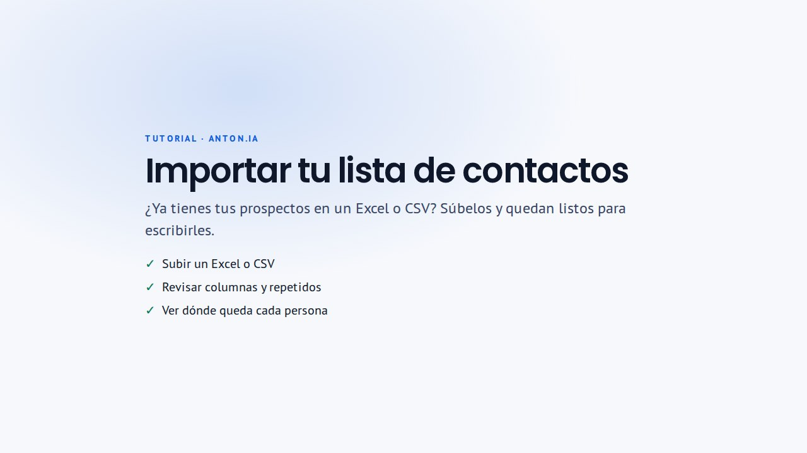
Paso a paso
- Busca en la hoja o filtra por estado (por ejemplo, enriquecido o respondido) e industria.
- Elige las columnas visibles: la selección y el orden también se usan al exportar.
- Exporta las filas visibles con «Exportar filas visibles» o elige otro formato.
- Desde una fila con correo, «Preparar correo» abre el editor de correo de ese contacto.
Preguntas frecuentes
- ¿Exporta todo o solo lo que veo?
- Solo las filas visibles, con los filtros y columnas que elegiste.
- ¿Puedo importar contactos?
- Sí, tu propia lista en Excel (.xlsx) o CSV, tal como sale de Excel, Google Sheets o tu CRM: pulsa «Importar lista» en «Por escribir», o «¿Ya tienes tu lista? Impórtala» en Buscar prospectos. Si el Excel tiene varias hojas, eliges cuál. Todos quedan en «Por escribir»; a quienes no traen correo se lo buscas desde ahí.
Seguimiento
Conversaciones
Cada conversación, su estado y el próximo paso. Aquí contestas a quien te respondió.
En el menú: Conversaciones /contacted
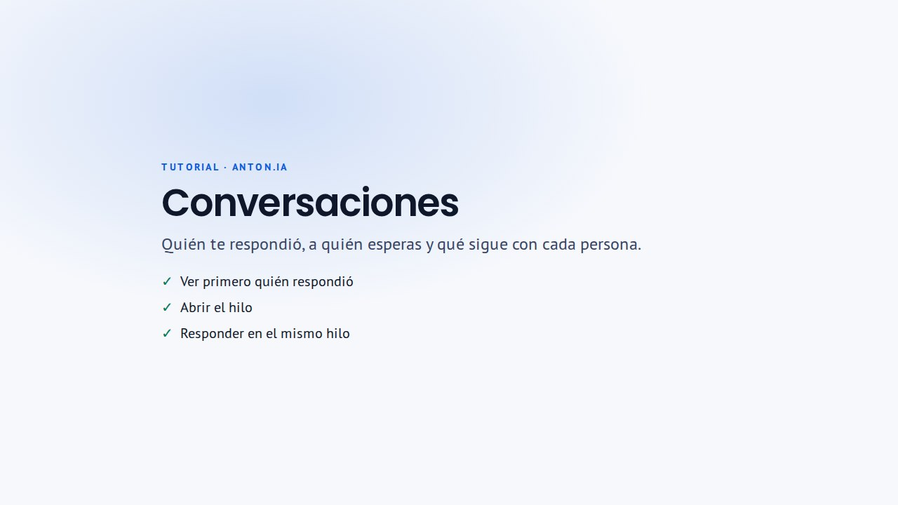
Paso a paso
- Empieza por «Por responder»: quienes esperan tu respuesta. Cada vista muestra cuántas conversaciones tiene.
- Las otras vistas son «Esperando», «Programados» y «Todas».
- Abre una conversación: en pantallas anchas se ve al lado de la lista, con el hilo, la actividad del correo y los próximos pasos.
- Pulsa «Responder» para escribir tú, o «Sugerir con IA» para partir de un borrador. Se envía en el hilo original; revisa el texto antes de enviarlo.
- «Detener seguimientos» cancela los correos pendientes de esa secuencia; lo enviado y el historial se conservan.
- Cuando termine, toca «Cerrar conversación» y elige cómo terminó: Sin acuerdo, Ganado, No interesado o Lo retomo yo. Ganado, Sin acuerdo y No interesado también cambian la etapa en el pipeline.
Consejos
- Las respuestas se revisan solas en segundo plano. «Traer respuestas» las trae en el momento desde tus cuentas.
- Activa «Solo mías» para ver solo tus conversaciones.
- La dirección guarda la vista y la conversación abierta: puedes compartirla, recargar o usar «atrás» sin perder el lugar.
- Una apertura no demuestra que la persona leyó el correo: los filtros de correo pueden generar o bloquear esas señales.
Preguntas frecuentes
- Alguien me respondió y no aparece. ¿Qué hago?
- Pulsa «Traer respuestas». Si sigue sin aparecer, revisa en «Conexiones» que tu correo esté conectado.
- ¿Qué pasa con los seguimientos si la persona responde?
- Se detienen solos.
- ¿Qué pasa al cerrar una conversación si trabajo en equipo?
- «Sin acuerdo» la deja libre para que otra persona del equipo la retome; «Ganado» y «No interesado» hacen que nadie más vuelva a contactarla; «Lo retomo yo» la mantiene tuya. Si alguien no responde, queda libre 30 días después del último envío.
- ¿Puedo responder desde mi bandeja de correo?
- Sí. «Abrir en correo» abre el hilo en tu cuenta. Al responder desde la app, la respuesta queda en el mismo hilo.
Campañas
Escribe a un grupo con una sola aprobación o revisa los seguimientos uno por uno.
En el menú: Campañas /campaigns
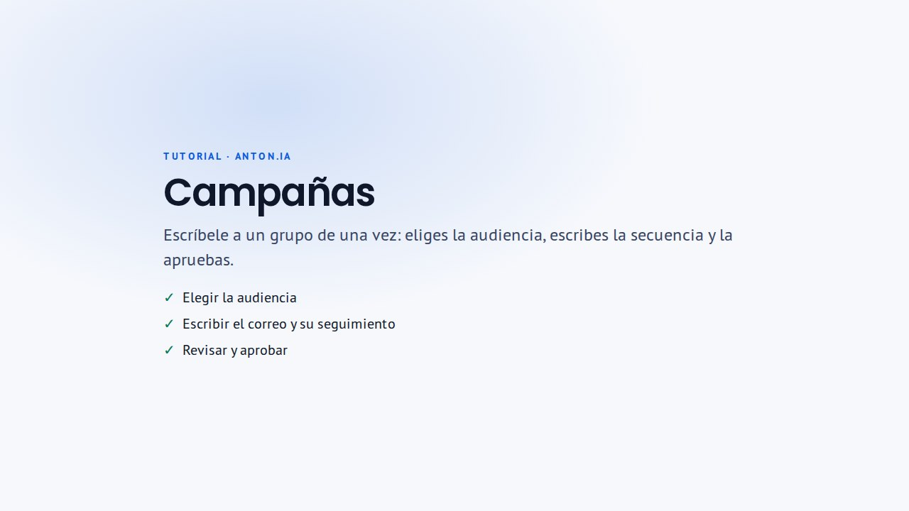
Paso a paso
- En «Campañas masivas», pulsa «Nueva campaña».
- 1. Audiencia: describe tu lead ideal o filtra tus contactos con correo. Elige hasta 100 personas y si incluir a quienes ya contactaste.
- 2. Correos: escribe o ajusta los mensajes. Puedes editar el correo de una persona en particular.
- 3. Revisión: revisa la vista previa por destinatario y pulsa «Aprobar campaña».
- En «Seguimientos individuales» revisas los seguimientos de tus correos uno por uno.
Consejos
- Cada envío incluye el enlace para darse de baja.
- Los seguimientos se detienen si la persona responde.
- «Excluir personas que ya respondieron» evita escribirles de nuevo.
Preguntas frecuentes
- ¿Cuántas personas puede tener una campaña?
- Hasta 100 por campaña.
- ¿Aprobar envía todo al instante?
- Aprobar autoriza los mensajes para toda la audiencia. Según la configuración de tu organización, los envíos parten solos o los inicias con «Enviar correos disponibles», que los envía desde el servidor por tandas.
- ¿Por qué un contacto quedó en revisión?
- Antes de cada envío se revisa que siga entre tus contactos, que no esté bloqueado, que no haya respondido (para los seguimientos) y que el primer correo siga cumpliendo los criterios aprobados. Si algo cambió, ese correo no sale y la persona queda en revisión; «Volver a comprobar» lo revisa de nuevo.
- ¿Puedo usar contactos sin correo?
- No. Las campañas usan tus contactos guardados con correo. Primero busca su correo: al guardarlos o desde «Por escribir».
Pipeline
Ordena a tus contactos por etapa de venta y por empresa, y prioriza a quién mover.
En el menú: Pipeline /crm
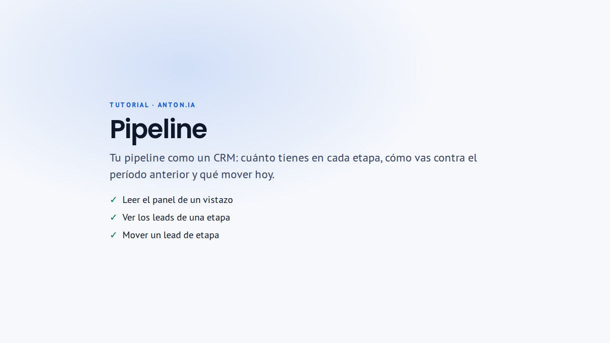
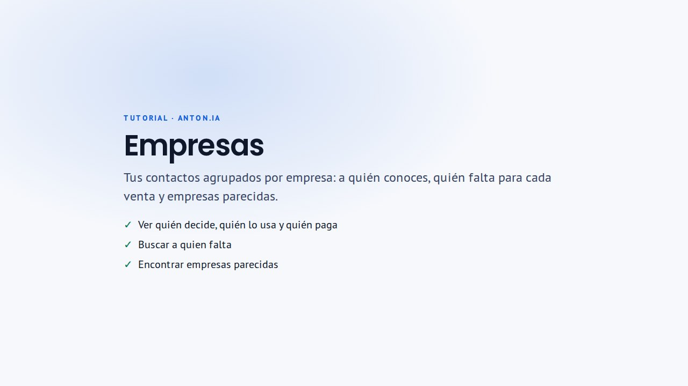
Paso a paso
- Las etapas son: Nuevos, Calificado, Contactado, Interesado, Reunión, Negociación, Ganado y Perdido.
- «Panel» es tu tablero tipo CRM: cifras con su comparación contra el período anterior, el pipeline abierto por etapa, cuántos avanzan de una etapa a la siguiente, tus contactos por mes contra tu promedio y los leads nuevos de 13 meses. Arriba eliges el período, el responsable y el origen; toca una etapa para ver sus leads. Se actualiza solo.
- En «Tablero», arrastra cada tarjeta a su nueva etapa o usa «Cambiar etapa».
- «Empresas» agrupa a tus contactos por empresa. Cada una muestra si conoces a quien decide, a quien usa lo que vendes y a quien paga. Abre una empresa para ver su cobertura por área y nivel; donde falta alguien, «Buscar» abre «Buscar prospectos» en esa empresa con los cargos ya escritos.
- En una empresa, «Buscar empresas parecidas» encuentra empresas del mismo rubro y tamaño que aún no tienes, y la IA elige las más parecidas y dice por qué. Usa una búsqueda de tu cupo diario. «Ver personas» abre la búsqueda de esa empresa.
- Abre un contacto para ver su actividad, el responsable y la próxima acción registrada.
- Arriba aparecen las sugerencias de etapa: un envío propone Contactado; una respuesta con interés, Interesado; una reunión pedida, Reunión; un pedido de propuesta o precio, Negociación; una compra confirmada, Ganado; y un «no me interesa», Perdido. Acéptalas una por una o con «Aceptar todas». En «Panel», cada etapa marca cuántos cambios esperan tu confirmación.
Preguntas frecuentes
- ¿Cómo llegan los contactos al pipeline?
- Aparecen cuando guardas o contactas leads.
- ¿Qué compara cada cifra del «Panel»?
- Los leads nuevos, los contactados y la tasa de respuesta se comparan con el período anterior del mismo largo (por ejemplo, los 30 días anteriores). Las etapas son una foto de hoy. La «Lectura» resume en frases lo más importante y te lleva a la etapa donde hay leads detenidos.
- ¿Las etapas cambian solas?
- No. Los envíos y las respuestas proponen el cambio y tú lo aceptas. Nunca se mueve un contacto hacia atrás ni uno ya cerrado.
- ¿Puedo asignar un responsable?
- Sí, en el detalle del contacto, en «Colaboración».
- ¿Cómo sabe «Empresas» quién decide, quién usa y quién paga?
- Por el cargo de cada contacto. Decide alguien de la alta dirección o un gerente de tu área; usa una jefatura o alguien del equipo de tu área; paga alguien de finanzas o compras, o el dueño en una empresa de menos de 200 personas. «Tu área» sale de «Cargos que buscas», en «Perfil».
- ¿Por qué una persona aparece en otra área?
- El área y el nivel salen de las palabras del cargo y, si se buscaron sus datos, de lo que informa el proveedor. Un cargo que dice poco, como «Product Owner», queda en «Otras áreas».
Configuración
Perfil
Lo que la IA sabe de ti y de tu empresa. Con eso busca prospectos, investiga y redacta.
En el menú: Perfil /profile
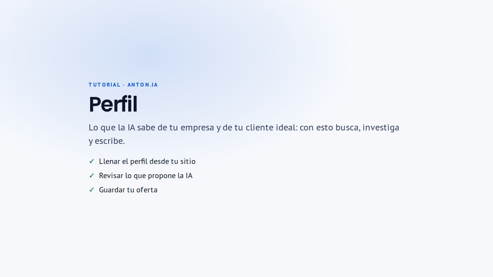
Paso a paso
- «Complétalo con IA»: escribe el sitio de tu empresa (si no, se usa el dominio de tu correo corporativo) y pulsa «Leer mi sitio».
- Revisa la propuesta: cada campo trae la página de donde salió. Marca lo que quieres usar y pulsa «Usar».
- Completa «Lo que vendes»: servicios, propuesta de valor, problemas que resuelves, por qué elegirte, pruebas y clientes que puedes nombrar.
- Completa «Tu cliente ideal»: cargos, industrias, tamaño de empresa y países.
- Pulsa «Guardar cambios». Nada se guarda antes.
Consejos
- El medidor «Tu perfil: N de 10» dice primero lo que destraba la redacción.
- La IA solo afirma lo que está en tu perfil: mientras más concreto, mejores correos.
- Tu firma, tono y llamada a la acción están en «Firmas y estilo».
Preguntas frecuentes
- ¿Por qué la IA no puede redactar mis correos?
- Falta lo que vendes: completa servicios o propuesta de valor en «Lo que vendes».
- La IA no pudo leer mi sitio. ¿Qué hago?
- Revisa que la dirección sea correcta o escribe el nombre de tu empresa. También puedes completar los campos a mano.
- ¿«Leer mi sitio» guarda algo?
- No. Revisas cada campo, y solo se guarda al pulsar «Guardar cambios».
- ¿Para qué sirve «Tu cliente ideal»?
- Es el primer punto de partida en «Buscar prospectos» y ayuda a la IA a ordenar la evidencia de cada contacto.
Conexiones
Conecta Gmail u Outlook para enviar desde tu propia cuenta y recibir las respuestas en la app.
En el menú: Conexiones /connections
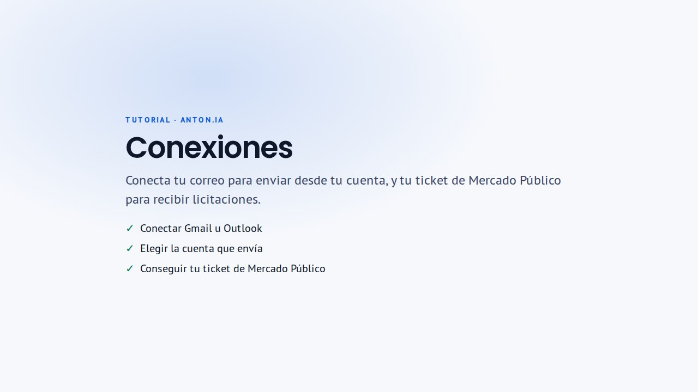
Paso a paso
- En «Correo», pulsa «Conectar» en Gmail u Outlook.
- Acepta los permisos en la ventana del proveedor.
- Vuelve a la app: la cuenta aparece como «Conectado».
- Si conectas las dos, elige en «Remitente predeterminado» cuál envía.
Consejos
- La conexión permite enviar correos desde la plataforma y leer los hilos para detectar respuestas.
- Las credenciales se guardan cifradas. Si el proveedor revocó el acceso, vuelve a conectar.
Preguntas frecuentes
- ¿Puedo conectar Gmail y Outlook a la vez?
- Sí. Elige en «Remitente predeterminado» cuál envía: Cowork y tus campañas la usan sin preguntarte. En cada correo, la línea «De:» muestra desde qué cuenta saldrá.
- ¿ANTON.IA lee todo mi correo?
- Lee los hilos de los correos enviados desde la app para detectar respuestas cuando se sincroniza la bandeja.
- Dice que hay credenciales guardadas pero no envía. ¿Qué hago?
- Su vigencia se comprueba al usarlas. Si el proveedor revocó el acceso, pulsa «Reconectar» en la cuenta.
- ¿Cómo desconecto una cuenta?
- En «Conexiones», pulsa «Desconectar» en la cuenta y confírmalo. ANTON.IA deja de enviar desde ella y de leer sus respuestas. Si tienes la otra conectada, esa pasa a enviar; si no, los envíos pendientes esperan hasta que conectes una.
Firmas y estilo
Tu firma va al final de cada correo que envías, tus estilos le dicen a la IA cómo escribir tus borradores y tu agenda es el enlace para que te pidan una reunión.
En el menú: Firmas y estilo /settings/email-studio
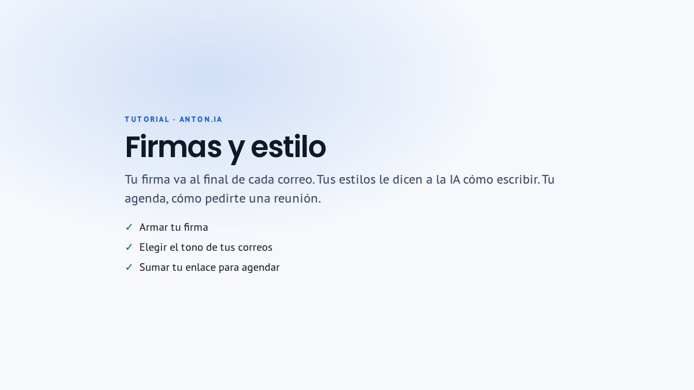
Paso a paso
- En «Firma», elige un diseño (Clásica, Con logo, Compacta o Imagen) y completa tus datos: vienen de tu perfil. La vista previa muestra cómo se ve en un correo.
- ¿Ya tienes una firma? Elige «Tu firma actual» y pégala desde Gmail u Outlook, o sube el archivo .htm de tu firma de Outlook.
- Deja encendido «Usar al enviar» y pulsa «Guardar firma». Es una sola firma para Gmail y Outlook; apaga «Una firma para todas tus cuentas» si quieres una distinta en cada una.
- En «Estilos», pulsa «Crear estilo» y sigue los 3 pasos: punto de partida, tono y largo, y «En tus palabras». Puedes pedir un «Ajuste con IA».
- En el asunto y el cuerpo, «Insertar» agrega datos de cada contacto, como {Nombre} o {Empresa}. Se reemplazan solos en cada correo.
- Guárdalo y márcalo como predeterminado para usarlo siempre. Duplicar, publicar para el equipo o archivar están en «Más».
- En «Agenda», pega el enlace donde te piden una reunión (Calendly, Google Calendar, Microsoft Bookings, HubSpot u otro) y elige cuándo va: «Automático» lo agrega a la respuesta sugerida cuando alguien muestra interés o pide reunión; «Solo cuando lo pida» deja el botón «Insertar mi agenda» al escribir; «Nunca» no lo pone. Nunca va en un primer correo.
- En «Agenda» también eliges después de cuántos días «Hoy» te avisa para retomar una conversación (30, 60, 90 o nunca).
Preguntas frecuentes
- ¿Dónde se usa mi estilo?
- El predeterminado se usa solo en Redactar, en tus campañas y en Cowork. En Redactar puedes elegir otro en «Perfil de estilo».
- ¿Tengo que agregar la firma en cada correo?
- No. Con «Usar al enviar» encendido, se agrega sola al final de cada correo que envías desde la app, antes del enlace para darse de baja.
- ¿Puedo usar la firma que ya tengo en Gmail u Outlook?
- Sí. Elige «Tu firma actual», cópiala desde tu correo y pégala en el recuadro, o sube su archivo .htm. Se conservan el formato, los enlaces y las imágenes publicadas; si una imagen está solo en tu computador, la pantalla te lo dice.
- ¿Puedo usar la imagen de firma que ya tengo?
- Sí. Elige el diseño «Imagen» y súbela en PNG o JPG, hasta 2 MB.
- No tengo agenda en línea. ¿Cómo creo una?
- En Google Calendar, en el computador: «Crear» → «Agenda de citas», elige duración y horarios, guarda y copia el enlace con «Compartir». Es gratis. Pégalo en «Agenda».
- ¿Por qué mi agenda no va en el primer correo?
- Pedir que agenden antes de que te conozcan suele bajar las respuestas. La IA la ofrece cuando la persona ya mostró interés; tú puedes insertarla cuando quieras con «Insertar mi agenda».
Privacidad
Bajas, solicitudes de privacidad y controles de cumplimiento, en un solo lugar.
En el menú: Privacidad /settings/privacy
Paso a paso
- «Bajas y exclusiones»: correos y dominios que no deben volver a ser contactados.
- «Solicitudes de privacidad»: solicitudes de acceso, rectificación o eliminación.
- «Incidentes de privacidad»: registro y seguimiento de incidentes.
- «Política de privacidad»: la política pública y los canales para ejercer derechos.
Preguntas frecuentes
- ¿Qué pasa cuando alguien se da de baja?
- Queda registrado y la app bloquea los envíos a ese correo.
- ¿Puedo excluir una empresa completa?
- Sí, bloqueando su dominio en «Bajas y exclusiones». La app no envía a correos de un dominio bloqueado.
Créditos y uso diario
Algunas acciones usan créditos o un cupo diario: buscar prospectos, buscar correos, investigar y contactar.
Paso a paso
- Tu uso del día está en «Hoy», en «Créditos y uso diario». Se reinicia a medianoche (UTC).
- «Mis créditos» muestra tu asignación personal, si tu administrador te dio una. Si no, usas los créditos compartidos del equipo.
- El teléfono es opcional y cuesta 10 créditos por persona.
Preguntas frecuentes
- Me quedé sin créditos. ¿Qué hago?
- Pídele más a un administrador de tu organización. El cupo diario se reinicia a medianoche (UTC).
- ¿Buscar el correo gasta créditos aunque no lo encuentre?
- Cuenta en tu uso diario cada contacto enviado a buscar.
Administración
Para dueños y administradores
Administración
Para dueños y administradores: quién usa la app y para qué, qué necesita atención, el equipo y sus créditos.
En el menú: Administración /dashboard/admin
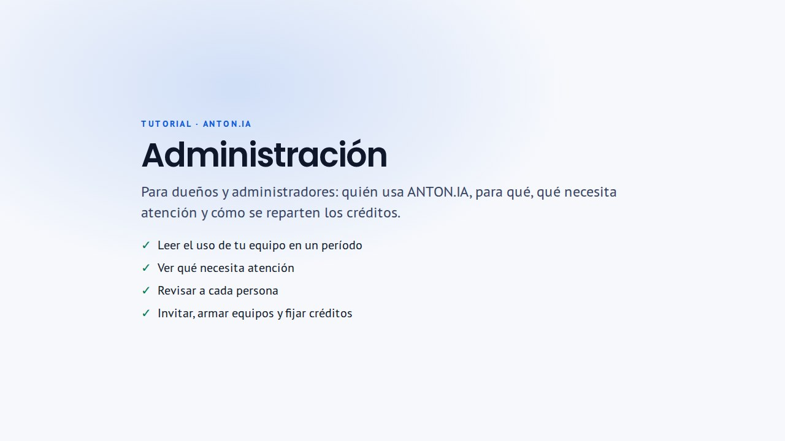
Paso a paso
- En «Uso y resultados», elige el período (hoy, 7, 30 o 90 días, o tus fechas) y el equipo.
- «Qué necesita atención» muestra señales concretas para revisar ahora, cada una con su evidencia.
- La pestaña «Personas» dice quién la usa, cuántos días y cuántos créditos; toca un nombre para ver su detalle.
- En «Personas» (arriba) invitas miembros y cambias su rol; en «Equipos» los agrupas.
- En «Créditos» revisas el uso y, si tienes permiso, fijas límites por equipo o por persona.
Preguntas frecuentes
- ¿Quién ve este panel?
- Los dueños y administradores de la organización activa.
- ¿Cómo invito a alguien?
- En «Personas», con «Invitar miembro».
- No puedo cambiar los créditos. ¿Por qué?
- Cambiar créditos requiere un permiso adicional. Si lo necesitas, pídelo a quien administra la plataforma.